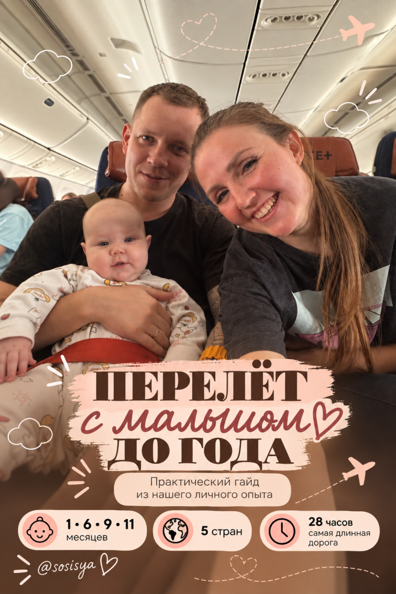
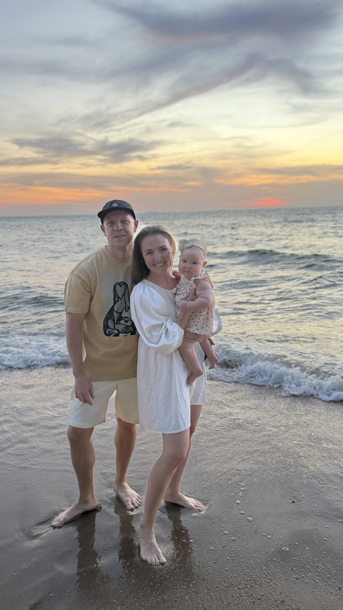
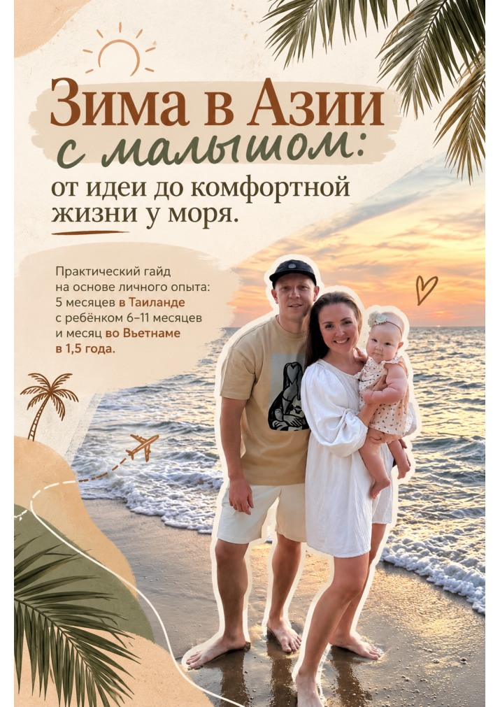
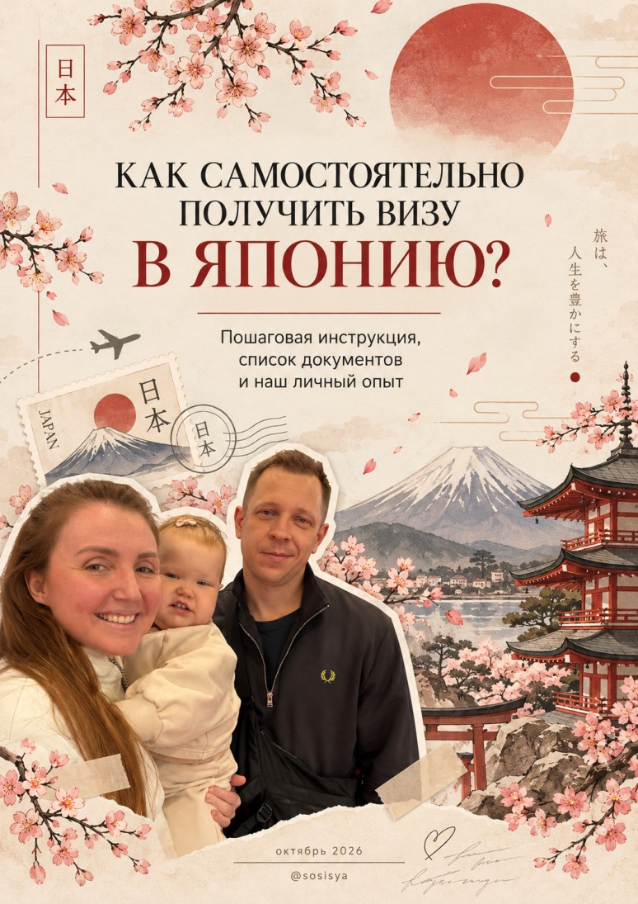

Перелёт с малышом
до года
Практический гайд из нашего личного опыта. Как выбрать рейс и места, разобраться с люлькой и подготовиться к путешествию с малышом.
Выбор рейсаМеста в самолётеЛюлька
Версия для просмотра в интернете.
Привет, я Луиза. Здесь моя жизнь с мужем, дочкой и гайды, в которых собран личный опыт.
Смотреть гайды
Путешествия с ребёнком, жизнь на чемоданах и уютный дом без лишних заморочек.
Я Луиза и я никакой не эксперт, а просто женщина.
Я мама Стеши, любящая и любимая жена прекрасного мужа, путешественница и человек, которому всегда интересно пробовать что-то новое.
Мы с мужем сменили профессии после 30, много путешествуем и растим дочку так, чтобы появление ребёнка не стало концом нашей прежней жизни.
Я не верю, что с детьми нужно ставить жизнь на паузу. Можно летать на другой конец света, открывать новые страны, обустраивать дом мечты и продолжать заниматься собой.
Здесь я собираю всё, что проверила на собственном опыте, — свои находки, выводы и практические гайды, которые помогут тебе подготовиться к новому опыту и избежать чужих ошибок.
Никакой идеальной картинки и универсальных инструкций к жизни. Просто мой опыт, которым я делюсь с тобой.
Можно читать сейчас или сохранить на потом.

Практический гайд из нашего личного опыта. Как выбрать рейс и места, разобраться с люлькой и подготовиться к путешествию с малышом.
Версия для просмотра в интернете.

От идеи до комфортной жизни у моря. Практический гайд на основе личного опыта: 5 месяцев в Таиланде с ребёнком 6–11 месяцев и месяц во Вьетнаме в 1,5 года.
Версия для просмотра в интернете.

Пошаговая инструкция, список документов и наш личный опыт. Гайд для тех, кто хочет самостоятельно подготовиться к подаче на японскую визу.
Версия для просмотра в интернете. Октябрь 2026.
Наши будни, поездки и материнство как оно есть.